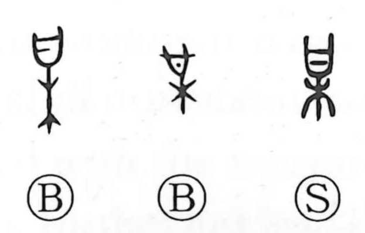

某

Kun: soregashi, nanigashi | On: bou
certain ・ some ・ so-and-so
Explanation
Shirakawa explains 某 as a compound of 曰 and 木. In early forms it depicts an inscribed covenant tablet—something written to the gods—fastened to a tree branch as an offering, a rite by which one inquired into and gauged the divine will. From this core sense of consulting and laying out a plan, 某 stands as the original graph of 謀 (to plan), and with added elements yields 媒 (to arrange a marriage) and 禖 (a prayer for a child offered at a sacred tree). In later usage it became a placeholder for an unnamed person or thing, as in 某国, 某日, 某所, and it is read soregashi and nanigashi with the meaning “a certain so-and-so.”